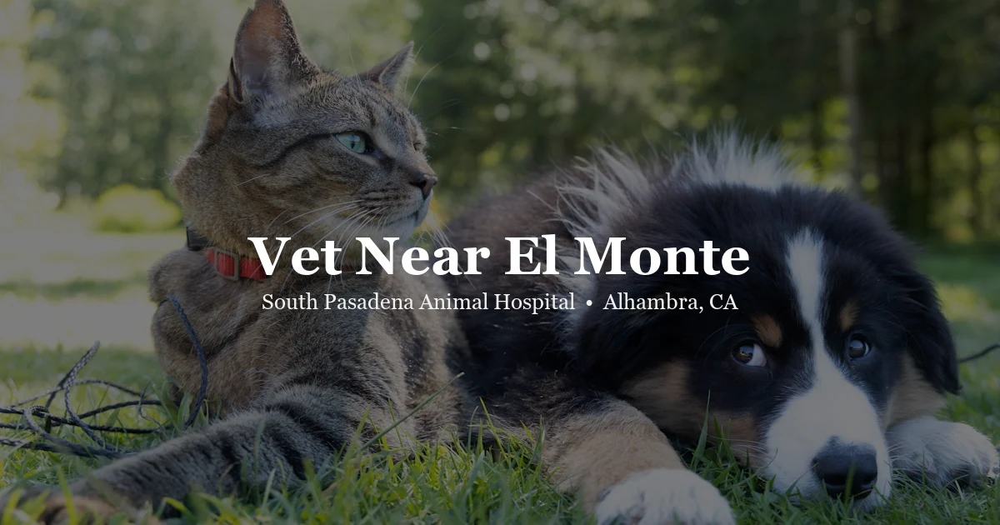

May 3, 2026 · 6 min read
Vet Near El Monte for Dogs, Cats, and Small Pets

El Monte has a large pet-owning population — dogs, cats, rabbits, and smaller pets are common in households throughout the city. Finding a veterinary clinic that's a short drive away, does good work, and is upfront about what things cost is harder than it sounds. That's what brings a lot of El Monte residents to South Pasadena Animal Hospital.
We're in Alhambra at 3116 W Main St — about 15 minutes west of El Monte on Valley Boulevard or via the I-10 to Fremont. No appointment is a hassle when your pet actually needs care. Our El Monte vet page has all the details on what we see and how to book. You can also call us directly at (626) 441-1314.
What El Monte pet owners need from a vet
Straightforward care, honest pricing, and a vet who actually listens. That's not an unreasonable ask, and it's also not universal across every practice in the SGV. Plenty of clinics in the area are fine — but fine and good are different things, and when your dog is sick at 8 AM on a Tuesday, you want somewhere you trust.
A few things we do that matter to El Monte clients who've come to us after trying other places:
- Transparent pricing — our pricing page lists exam fees before you walk in. Dog and cat exam fees, exotic animal exam fees, and common add-on costs are posted openly. No quote at checkout that's double what you expected.
- Real appointments — we don't double-book. Your appointment slot is yours. The doctor has time to actually go through your pet's history and the issues you've brought in.
- Continuity — we keep detailed records and remember your pet. If your cat was seen six months ago for a urinary issue and you're back for something else, that history informs what we're looking at today.
Dogs — what we see and treat
From annual wellness exams and vaccinations to skin issues, ear infections, GI problems, and prescription management — we handle the full range of routine and medical dog care. Dental disease is one of the most common things we address; by age three, most dogs have tartar buildup and early gum disease that will cause real problems if it isn't managed. Annual dental cleanings make a meaningful difference in long-term quality of life.
We also see dogs for weight management conversations, behavioral concerns (is this dog anxious or actually sick?), and post-surgical recheck appointments. The dog vet page has more on what to expect at a wellness visit.
Vaccinations for El Monte dogs
Core vaccines for dogs include rabies (required by California law), and DA2PP — which covers distemper, adenovirus, parvovirus, and parainfluenza. If your dog goes to dog parks, boarding facilities, or daycare, Bordetella (kennel cough) is strongly recommended. Leptospirosis is worth considering for dogs that have access to standing water or wildlife — El Monte and the Rio Hondo area have enough green space that this isn't irrelevant.
We tailor vaccine schedules to your dog's actual lifestyle rather than vaccinating identically across every patient. A dog who spends most of its time indoors in an apartment has different risk exposure than one who's outside in Whittier Narrows most weekends.
Cats — annual exams and why they matter
Most indoor cats see a vet far less frequently than they should. Annual exams catch dental disease, weight changes, kidney function decline (common in middle-aged and older cats), and blood pressure issues before they become serious. Cats are notoriously good at hiding discomfort — a cat that seems fine at home often has something worth addressing when you actually examine it.
For El Monte cat owners, we see everything from routine wellness and vaccines to hyperthyroidism management, dental extractions, and skin conditions. Our cat vet page covers what we offer and what a typical visit looks like.
Senior cat and dog care
Pets over seven years old benefit from semi-annual exams and routine bloodwork. The reason isn't to find something to treat — it's to establish baseline values while the animal is healthy, so you have something to compare against when things change. Catching early kidney disease, thyroid changes, or anemia at a routine exam is a fundamentally different situation than catching it when the animal is already symptomatic.
If you have a dog or cat over seven and haven't had bloodwork done recently, it's worth scheduling. The pricing page has current fees.
Exotic pets from El Monte
El Monte has a lot of households with rabbits, guinea pigs, and small caged birds. Most general practice veterinary clinics in El Monte and the immediate area don't see exotic animals — or see them infrequently enough that it isn't their real depth. SPAH is one of the closer options for El Monte residents who need genuine exotic pet care.
We see rabbits, guinea pigs, chinchillas, hamsters, birds (parrots, cockatiels, conures, finches), and reptiles (bearded dragons, leopard geckos, ball pythons). Species-specific pages are linked from our services page, or call us at (626) 441-1314 to confirm we can see your animal before the drive.
How to get to us from El Monte
Two main routes work well. The faster option for most of El Monte is Valley Boulevard west — it runs directly from the heart of El Monte into Alhambra without any freeway. From the Tyler Avenue or Garvey Avenue area, Valley Boulevard takes you straight through to Main Street in Alhambra in about 15 to 18 minutes in normal traffic.
Alternatively, take the I-10 west to Fremont Avenue, exit south, and follow Fremont into central Alhambra. That route puts you close to Main Street quickly. We're at 3116 W Main St, Alhambra, CA 91801, with parking directly in front of the clinic.
Book online through our portal or call (626) 441-1314. Our contact page has all the booking details.
Questions from El Monte pet owners
What animal hospital is near El Monte?
South Pasadena Animal Hospital is in Alhambra, about 15 minutes west of El Monte via Valley Boulevard or the I-10. We're at 3116 W Main St, Alhambra, CA 91801. Call (626) 441-1314 to schedule.
How much does a vet visit cost near El Monte?
Our pricing page lists exam fees for dogs, cats, and exotic animals. We post pricing transparently so you know what to expect before you come in.
Can I bring my dog or cat from El Monte to South Pasadena Animal Hospital?
Yes. From central El Monte, take Valley Boulevard west or the I-10 west to Fremont Avenue — the drive to our Alhambra location is typically 15 to 20 minutes.
Does South Pasadena Animal Hospital see exotic pets?
Yes. We see rabbits, birds, reptiles, guinea pigs, chinchillas, hamsters, and tortoises. Most clinics in the El Monte area do not see exotics, making SPAH one of the closer options for SGV exotic pet owners. Call (626) 441-1314 to confirm for your species.
Do you offer vaccinations near El Monte?
Yes — core and lifestyle vaccinations for dogs and cats, including rabies, DA2PP, FVRCP, Bordetella, and leptospirosis. Included as part of wellness exams. See spah.la/pricing for current fees.
What is the phone number for South Pasadena Animal Hospital?
(626) 441-1314. We're at 3116 W Main St, Alhambra, CA 91801.